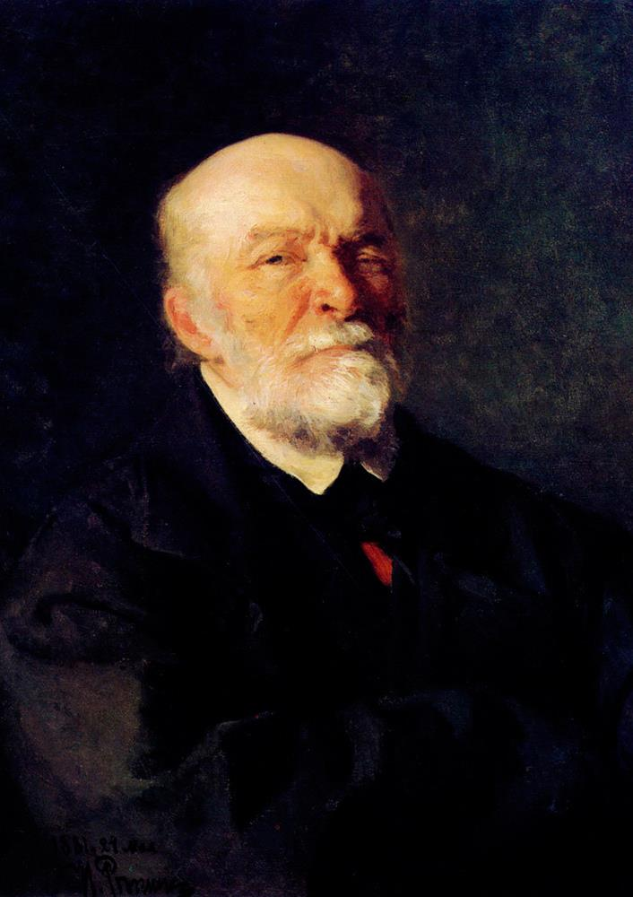

|
|---|
Николай Иванович Пирогов(13 (25) ноября 1810, Москва — 23 ноября (5 декабря) 1881, с. Вишня (ныне — в черте Винницы))Русский хирург и учёный-анатом, естествоиспытатель и педагог, профессор, создатель первого атласа топографической анатомии, основоположник русской военно-полевой хирургии, основатель русской школы анестезии.Первоначальное образование получил дома. В 1822—1824 годах учился в частном пансионе В. С. Кряжева, который вынужден был оставить из-за ухудшившегося материального положения отца. Определяющую роль в решении учиться медицине сыграл профессор медицины Е. О. Мухин, который бывал в семье Пироговых. Этого человека Пирогов считал своим духовным отцом. Мухин заботился о Пирогове, помогал семье деньгами, даже предложил матери сделать сына казённокоштным студентом, но несмотря на нужду в семье, мать Пирогова отказалась, сочтя это унизительным. В 1823 году (в возрасте 14 лет) Пирогов поступил своекоштным студентом на Медицинский факультет Императорского Московского университета. В университете слушал лекции Х. И. Лодера, М. Я. Мудрова, Е. О. Мухина, которые оказали значительное влияние на становление научных взглядов Пирогова. В 1828 году окончил отделение врачебных (медицинских) наук университета со степенью лекаря и был зачислен в воспитанники Профессорского института, открытого при Императорском Дерптском университете для подготовки будущих профессоров российских университетов. Занимался под руководством профессора И. Ф. Мойера, в доме которого познакомился с В. А. Жуковским, а в Дерптском университете подружился с В. И. Далем. В 1847 году Пирогов уехал в действующую армию на Кавказ, так как хотел проверить в полевых условиях разработанные им операционные методы. На Кавказе он впервые применил перевязку бинтами, пропитанными крахмалом; крахмальная перевязка оказалась удобнее и прочнее, чем применявшиеся раньше лубки. В том же году Пирогов впервые в истории медицины провёл операцию с открытым Уильямом Мортоном в 1846 году эфирным наркозом в полевых условиях (при осаде аула Салты), выполнив впоследствии около десяти тысяч таких операций. В октябре 1847 года Пирогов получил чин действительного статского советника. В начале Крымской войны, 6 ноября 1854 года, Пирогов вместе с возглавляемой им группой врачей и медсестёр выехал из Санкт-Петербурга на театр военных действий. Среди врачей были Э. В. Каде, П. А. Хлебников, А. Л. Обермиллер, Л. А. Беккерс, доктор медицины В. И. Тарасов и верный помощник Пирогова — фельдшер И. Калашников. Медсёстры, в обучении которых принял участие Пирогов, представляли Крестовоздвиженскую общину сестёр милосердия, только что учреждённую по инициативе великой княгини Елены Павловны. Пирогов был главным хирургом осаждённого англо-французскими войсками города Севастополя. Оперируя раненых, Пирогов впервые в истории русской медицины применил гипсовую повязку, дав начало сберегательной тактике лечения ранений конечностей и избавив многих солдат и офицеров от ампутации. Во время осады Севастополя Пирогов руководил обучением и работой сестёр Крестовоздвиженской общины сестёр милосердия. Он распределил их на четыре группы: перевязочные, аптекарши, хозяйки, а также транспортные сёстры, которые сопровождали раненых до госпиталя. Это было нововведением по тем временам. Кроме того, сёстры занимались уборкой, готовили еду и контролировали интендантов. Из 250 сестёр милосердия, работавших в Севастополе, 17 погибли от ранений и болезней. О беспримерной деятельности сестёр Крестовоздвиженской общины и в память об их подвиге Пирогов написал «Исторический обзор действий Крестовоздвиженской общины сестёр попечения о раненых и больных в военных госпиталях в Крыму и Херсонской губернии с 1 декабря 1854 по 1 декабря 1856 года». Важнейшей заслугой Пирогова стало внедрение в Севастополе совершенно нового метода сортировки раненых. Пирогов впервые в мире предложил распределять раненых по степени тяжести на пять категорий. Из такой сортировки впоследствии выросла вся лечебно-эвакуационная служба армии. С большим трудом Пирогову удалось организовать работу военно-транспортных команд с лошадьми и удобными повозками, что позволяло довольно быстро доставлять раненых в госпиталь. Поэтому Пирогов по справедливости считается основоположником специального направления в хирургии, известного как военно-полевая хирургия. |
Меню |
Изображение |
©2021 |
|---|